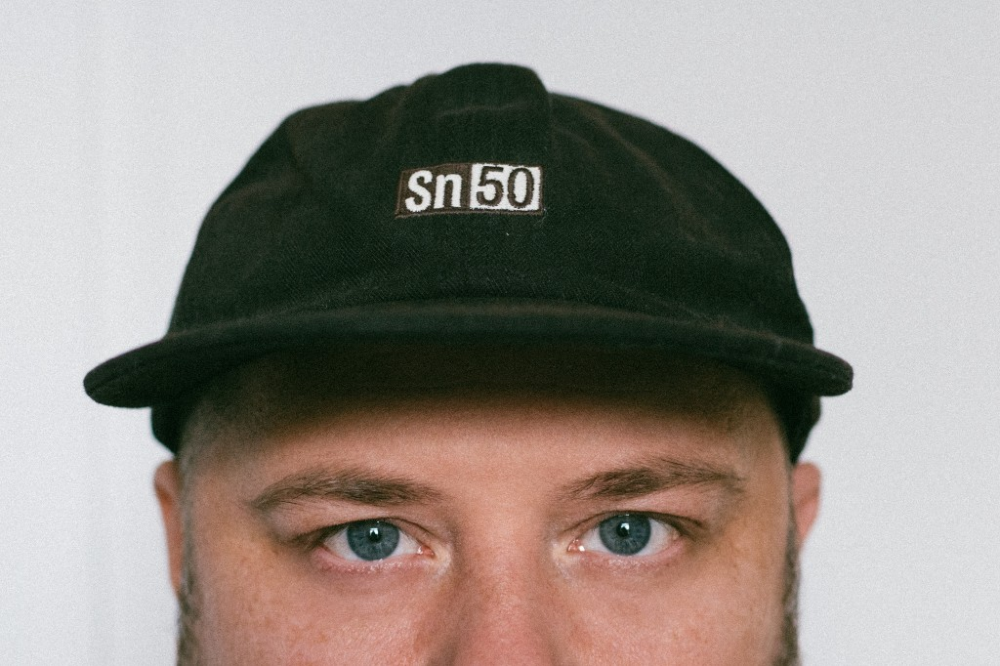

Независимый арт-директор, дизайнер визуальных систем и типограф. Ко мне приходят за айдентикой, навигацией, гайдбуками и шрифтами — когда нужна система, которая работает последовательно в реальной среде.
Моя практика строится на пересечении типографики, пространственной графики и системного мышления. При необходимости я собираю команду под задачу, провожу воркшопы и отвечаю за результат от исследования до внедрения — балансируя между экспериментом и чёткой структурой.
Каждый проект — визуальный язык, где форма служит смыслу, типографика — восприятию. Решение должно масштабироваться, оставаться понятным и сохранять цельность при росте проекта.
Развиваю собственный проект Typefeed — медиа о типографике и дизайне. Это усиливает мою экспертизу в работе с визуальными языками и системами.